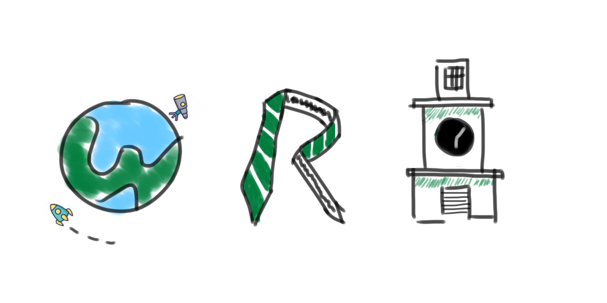
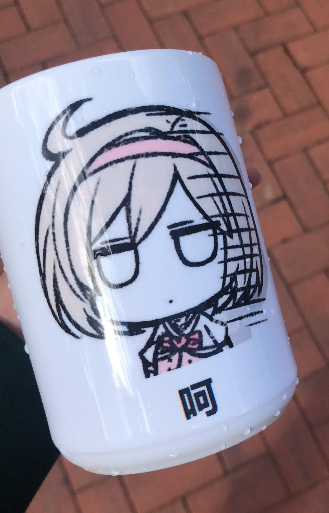
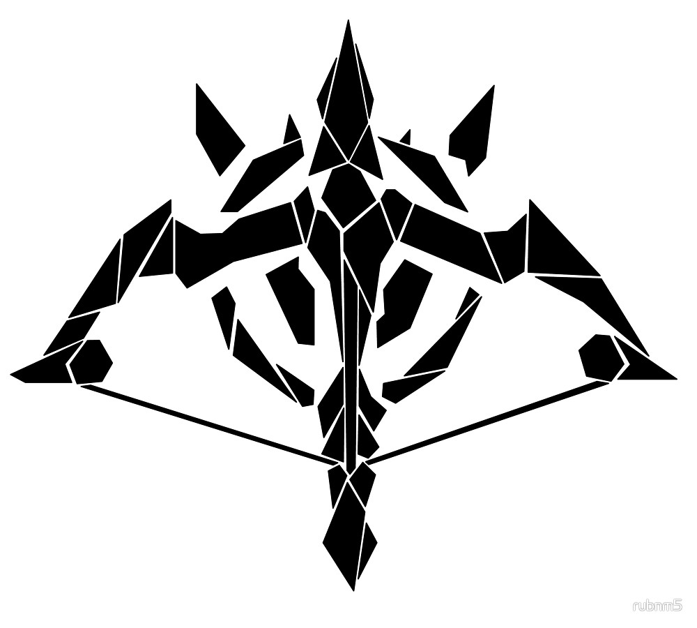

|
 |
 |
 |
|
 |
 |
 |
 |
| We use Brother GT-361 printer for t-shirt. Before and after we put the t-shirt in, we need to iron it so that the printer can have a flat surface to put ink on. |
The requirement is that the t-shirt must relate to WRA, Hudson, or Ohio. I chose WRA and drew a simple logo. W represents the Loomis Observatory, R represents school uniform, and A represents Chapel. All three letters use Reserve Green. |
The finished t-shirt looks like this. |
The mug is printed using Sawgrass 800 printer. It uses dye sublimation, a process of subliming the cooled ink printed on a piece of paper and leaving it on the mug. It can also print on other objects, like pencil cases or sandles. |
The image should be reversed before printing because it will be reversed again when transferring from the paper to the mug. Here, I used a free meme shared by a player of Grandblue Fantasy. |
After sublimation, throw the mug into water to cool down. The finished mug looks like this. |
The last project uses UV printer. I chose to print a marksman icon on a popsocket. |
The image used. |
The final product. Click here to download all original files |